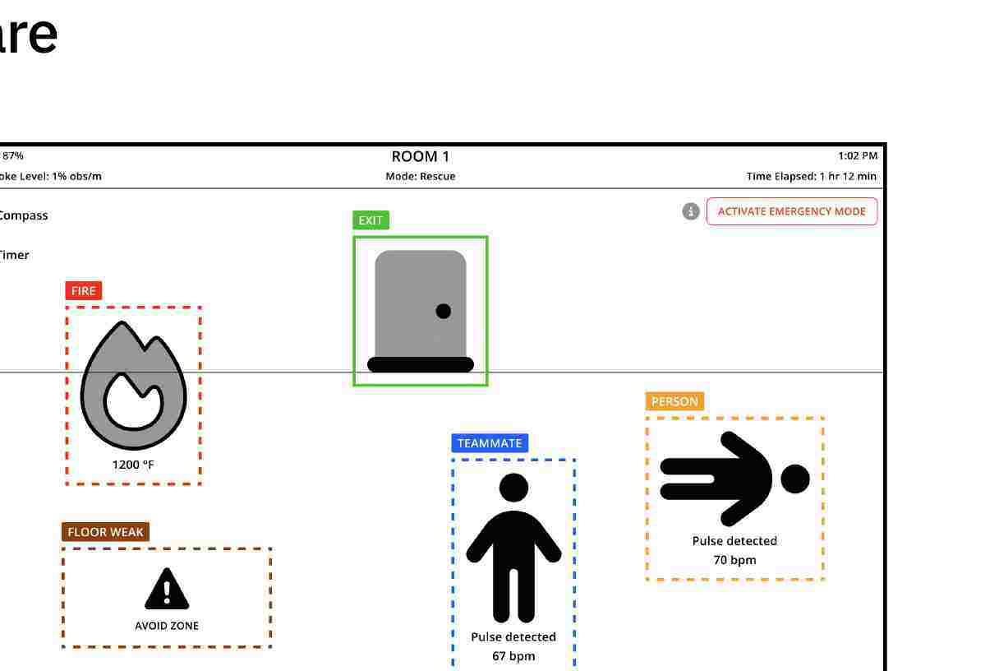
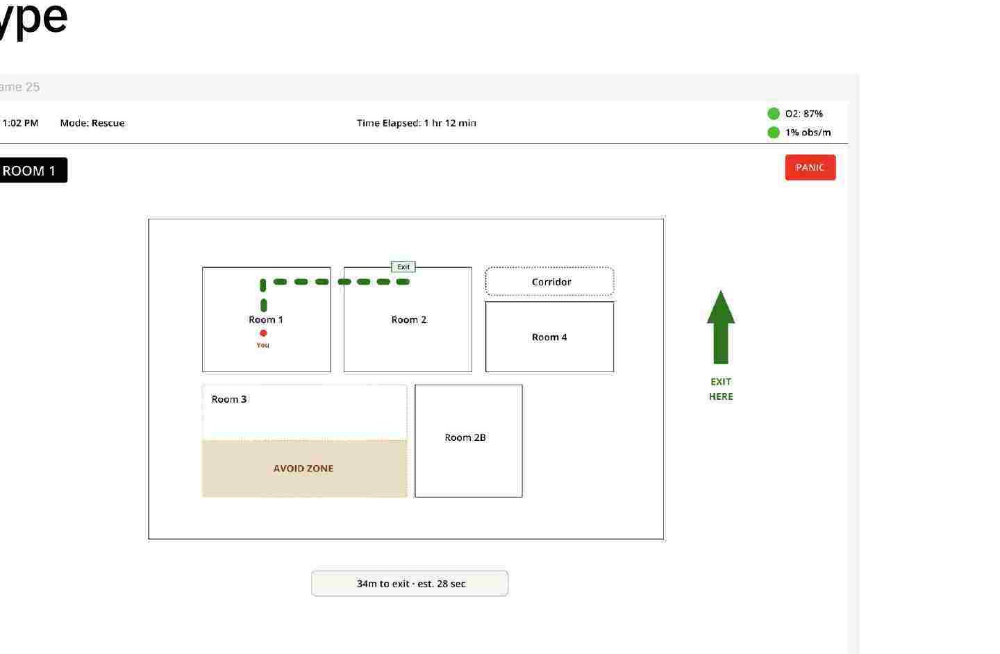
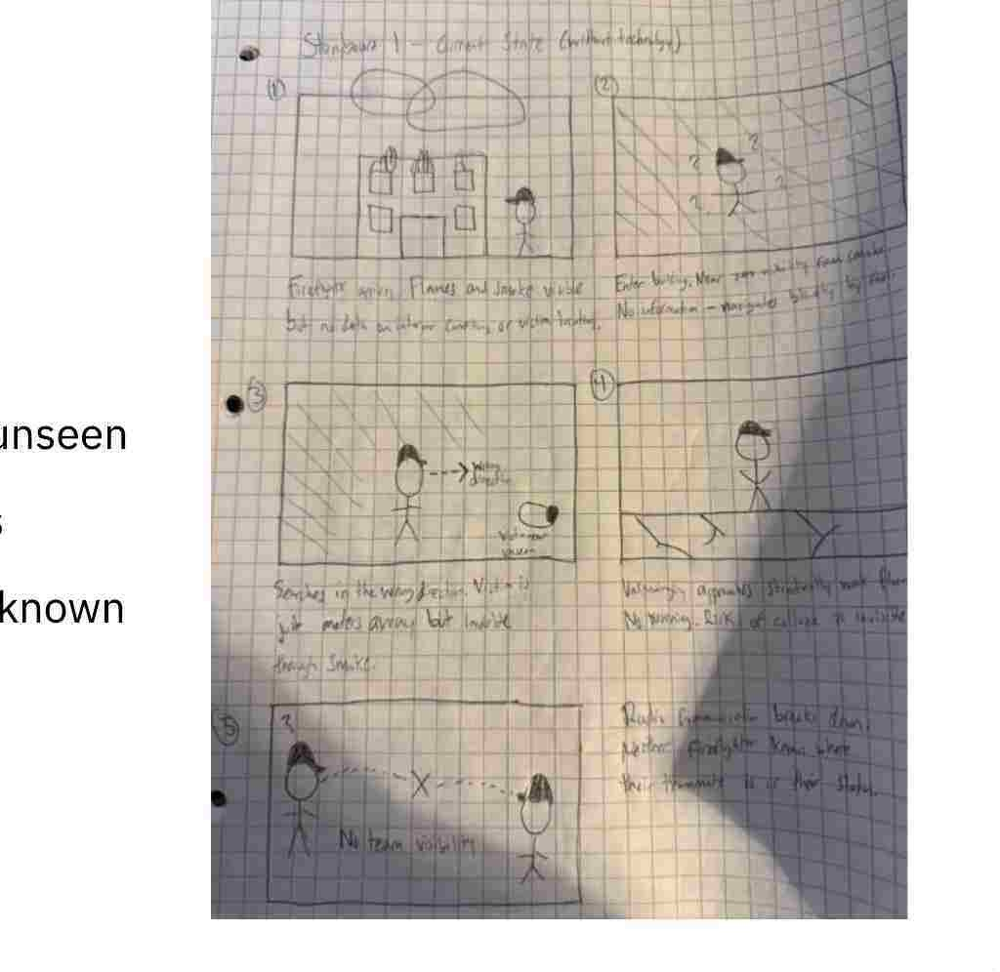
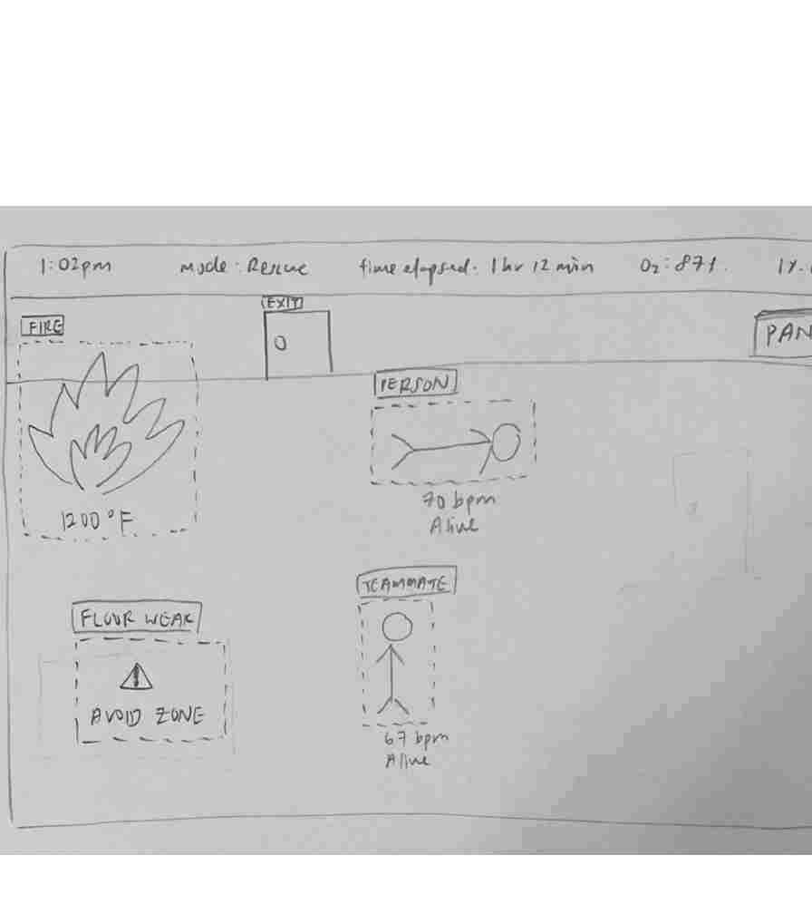
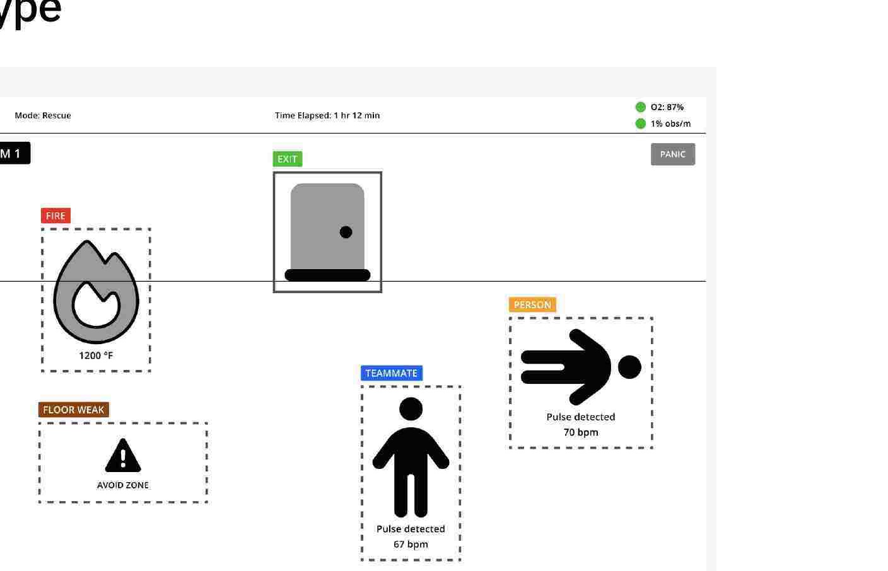
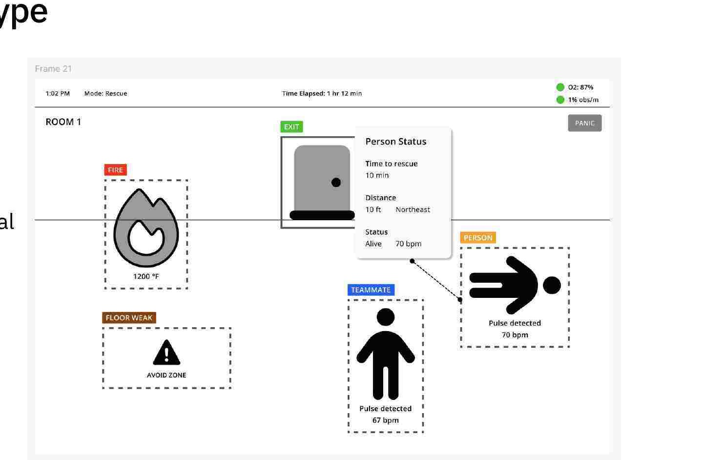
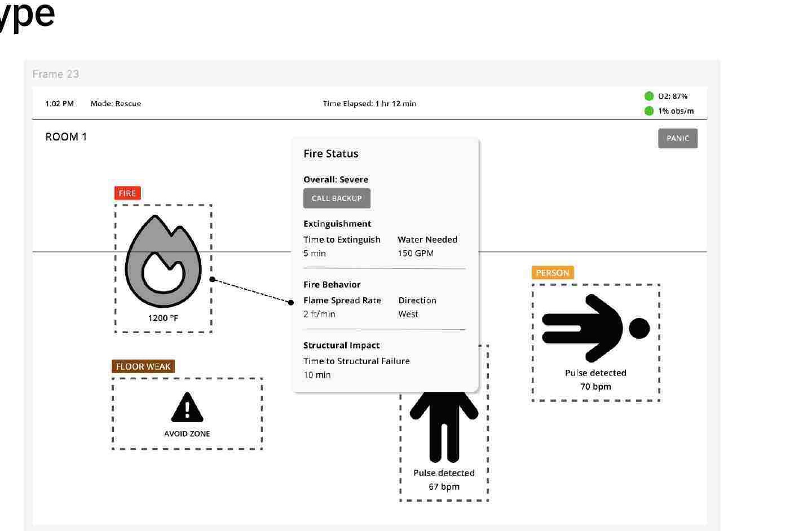
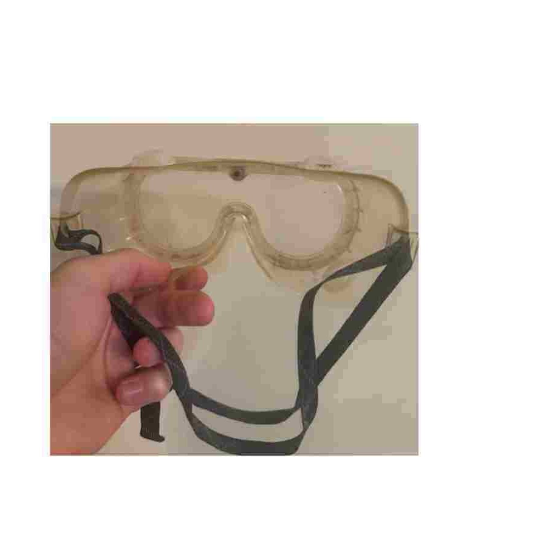

The gear already protects the body. Helmet, tank, radio. Instinct and experience fill the gaps when the room is black.
← All work
SP26 · Prototyping Interactive Systems
Firefighter AR Mask
Smoke hides victims, exits, and the floor that is about to fail. The mask is a visor HUD — thermal overlays, pulse and oxygen, a color for each kind of object — so a firefighter is not navigating by feel alone.


Thick smoke hides the victim two meters off the search line. Floors fail without a warning. Radios drop. The visor is still a window onto nothing.
One HUD in the mask. Thermal and IoT on the overlay. Tap for a modal. Emergency mode for the green path. Onboard sensors if the drone goes quiet.
The problem
Firefighters walk into burning structures with near-zero visibility, unpredictable structure, and communication that fragments under heat and noise. Life-or-death decisions land in seconds. Protective gear shields the body and offers almost no real-time picture of the room.
Pei Wei Chia (Michelle) and I took that as the brief for Prototyping Interactive Systems in spring 2026. The architecture we wrote down was not a prettier helmet camera. External thermal drones map heat from above. Building sensors watch stress, temperature gradients, and smoke density. Computer vision classifies victims, teammates, and hazards on the thermal feed. Onboard sensors are the graceful fallback when the mesh drops. Live AR is for rescue. The same hardware was supposed to flip into VR for firehouse training — a concept we named and never built.
What we kept from the 10×10
We sketched independently first, then compared. Breadth before the obvious visor. My ten included a thermal overlay, an O₂ HUD, structural integrity from building sensors, a teammate minimap, VR training, voice control, AI victim boxes, a live floorplan, radio captions, and a least-smoke exit path. Michelle’s ten overlapped on thermal, air quality, wayfinding, victim status, voice, team O₂, a commander feed, and an emergency escape mode.
The overlap was the validation. We anchored depth on thermal vision because it could carry ten genuine variations and because it attacked the actual problem — you cannot see — harder than any other single idea. The 10-in-1 pass became the HUD grammar: a status bar, fire with extinguish time, weak floor with a map, victim with pulse and a rescue clock, teammate with remaining oxygen, a panic control for the exit path, smoke past a threshold that draws the same path without waiting for a tap.
-
01
Ambient on the visor. Detail on tap.
The main view shows color, a label, and one number. Modals hold extinguish time, direction, toxic bars. No tester said the main screen showed too little — across three rounds.
-
02
Color is the first sort.
Fire red, victim orange, teammate blue, hazard brown, exit green. All three mid-fi testers found fire first without a prompt. Paper had asked for colored labels. We kept them.
-
03
PANIC is a bad noun for a path.
None of the three knew when to use it. Hi-fi renamed it Activate Emergency Mode, faded the rest, and drew a green AR exit. Hands still are not free. Voice is the next control, not another button.
-
04
The wearer’s own numbers belong on the visor.
Two of three could not find their O₂. We put smoke and oxygen in the header. Hi-fi still left a Stable badge fighting a red CO bar. That is a life-safety bug, not a polish note.
What I owned
The product is both of ours. I generated the ten independent directions, including the VR training mode we never prototyped, and I drew the mid-fi floor maps. Michelle took the main HUD and the person, teammate, and fire modals. We both sat in the paper evaluation, the goggles Wizard of Oz, and the hi-fi pass. The storyboard of arriving blind, searching the wrong way, and losing the radio is the current-state we kept walking testers through.


The product
Room 1, Rescue, an hour and twelve minutes in. The visor marks fire at 1200°F, a weak floor you are told to avoid, a teammate with a pulse, a person on the ground, and a door labeled exit. Tap fire and you get overall severe, call backup, time to extinguish, water needed, spread rate and direction, time to structural failure. Tap the person and you get minutes remaining, distance, northeast. Tap the teammate and you get an overall badge and bars for the gases. Tap the floor or the exit and the floorplan comes up — that flow was a hi-fi revision so two labels did not invent two maps.


Modals for the thing you can wait a second to know
Fire status carries Call Backup because the paper tester wanted an action, not only a temperature. Direction: West sits next to spread rate for the same reason. Teammate overall Stable was the badge all three mid-fi people read first. We added color bars so 680 ppm CO is not a raw number in a list. The floor map highlights only part of Room 3 as avoid — paper had made the whole room look condemned — and draws the corridor to Room 4 so it does not look like a hole.


Wizard of Oz before a custom mask
A real AR housing would have been the wrong fidelity. Safety goggles mimic the restricted view and the peripheral blind spots. A facilitator held a phone with the Figma prototype at viewing distance in front of the lens. That is a standard HCI move, and it is why mid-fi caught sidebar widgets that a flat laptop session would have treated as fine. We kept the goggles for the final physical pass instead of bolting on extra hardware. Input, when we specified it, is voice confirmation — because gloves and a victim do not leave a spare hand for Activate Emergency Mode.
Design decisions
-
01
Header is segments, not a sentence.
Paper said the top bar was a pile. We split mode, elapsed time, O₂, and a colored smoke indicator. Hi-fi labeled smoke in words, not only obs/m.
-
02
Exit is a solid border. Objects are dashed.
A dashed box around EXIT looked tappable, like fire. Solid for the door. A legend along the bottom so the colors have names.
-
03
One timer popup, ordered by urgency.
Rescue, structural, and evacuation clocks had been arguing across screens. Hi-fi put them in one list. Fire at six minutes unlabeled next to a “most critical” ten-minute rescue is still a conflict a firefighter would have to settle for us.
How we got there
Independent 10×10s, then thermal as the depth concept, then three storyboards: current state, future AR, and error recovery — cluttered boxes, a stale drone, a hot pipe tagged as a victim. Paper on the HUD. One informal evaluation with a 29-year-old software engineer, thinking aloud through hazards, victims, and exits. Then mid-fi in Figma with the paper notes applied, three think-alouds (Bailey, Yadira, Kyle), then hi-fi and the same goggles.
What paper changed: colored labels, a smoke indicator that is not only a number, Call Backup, flame direction, a partial avoid zone, a corridor, victim direction, teammate bars, a solid EXIT. What mid-fi still owed hi-fi: panic as a mode, a compass, a timer stack, wearer O₂ in the header, a legend, fewer abbreviations, floorplan from both weak floor and exit.
-
Sketch
20 directions, one anchor
Thermal overlay survived the compare. VR training did not make it into the file.
-
Paper
One engineer, think aloud
Hierarchy held. Labels, smoke, and the avoid-zone noun did not.
-
Mid-fi
Three sessions, goggles
Fire first. Stable badge first. Panic opaque. Floor map spatially mushy.
-
Hi-fi
Mode, not panic
Emergency path, compass, legend — and new bugs only the later file could show.
What we made
A click-through Figma HUD and a pair of goggles. There is no live mask. All three mid-fi testers said they would feel safer wearing it. All three pulled the right conclusions from fire, victim, and teammate screens. Hi-fi then surfaced issues the earlier file could not: a Stable label against a red CO bar (all three flagged it), no status strip once Emergency Mode fades the annotations, a person icon that reads as a navigation arrow, 150 gal/min that a wearer cannot act on.
The next iteration we wrote down is domain validation — one session with someone who has actually been in a structure fire — then a third prototype with wearer self-status, better teammate labels, and emergency workflows that do not erase the people you were just looking at. Voice for Emergency Mode. Dynamic routing instead of a floor map we never fundamentally rethought.
- Studio
- SP26 · Hope, Chia
- Ideation
- 20 concepts · thermal depth
- Usability
- 1 paper · 3 mid-fi
- Output
- Goggles WoZ + hi-fi proto
What I learned
Ambient versus on-demand held. Nobody asked the main visor to show more. The failures were contradictions and missing self. A badge that says Stable while CO is in the red is worse than a sparse HUD. A floor map we polished three times without changing the idea stayed weak three times. Wizard of Oz with goggles found peripheral problems; we then skipped the goggles in hi-fi, which is exactly the gap we listed under what did not work.
I would put a firefighter in the goggles before another Figma pass. Two tasks: “There is a person on the floor and the clock on the fire is six minutes — what do you do?” and “You cannot use your hands. Get out.” I would specify the IoT failure modes next to the overlay, not after it. And I would finally prototype the VR training mode or stop claiming the hardware does two jobs.